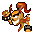
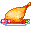

Fadas
Como conseguir, alimentar, subir de nível e ensinar habilidades à fada, com as regras reais deste servidor.
Como conseguir uma fada
- Ovos na Store, aba Fairy → Eggs. Clique duas vezes no ovo para chocar e equipe a fada no espaço de fada da janela de equipamento. O
 Egg of Life também vem da missão Scorpion Phobia.
Egg of Life também vem da missão Scorpion Phobia. - Fadas avançadas agora também saem do ovo, direto na Store: Luck, Strength, Constitution, Spirit, Accuracy, Agility e Evil por 150 mil; Mordo Junior, Angela e Angela Junior por 300 mil; os papagaios Emerald e Crimson Parrot vêm prontos (300 mil); e o Mysterious Pet Egg (200 mil) sorteia uma fada.
- O caminho antigo continua: casamento de duas fadas com a Demonic Fruit certa (Store, aba Marriage). A

Fairy of Strength também cai da Medusa.
Stamina e comida
- A fada trabalha em ciclos de 60 s (do nível 28 em diante, +5 s por nível). Em cada ciclo ela gasta 50 de stamina, cresce e pode gerar Fairy Coins.
- Com 49 de stamina ou menos ela para: não dá atributo nem usa habilidade.
- Rações: Fairy Ration +2.500 de stamina, Great Fairy Ration +5.000. As versões Auto (Auto Ration,

Great Auto Ration) alimentam sozinhas quando a stamina cai abaixo de 50%, se estiverem na mochila.
Subir de nível (frutas)
- Quando o crescimento enche, use uma fruta: a normal dá +1 nível e +1 no atributo dela; a Great dá +2.
- Atributos das frutas: Snow Dragon = STR, Icespire Plum = AGI, Zephyr Fish Floss = DEX (precisão), Argent Mango = CON, Shaitan Biscuit = STA (espírito).
- Até o nível 42 com frutas normais e Great. Do 42 ao 62, só com as Improved Fruits (Store, aba Fruits, 350 mil cada).
Habilidades
| Habilidade | O que faz (Novice / Standard / Expert) |
|---|---|
| Protection | Com o HP em 20% ou menos, absorve 45% / 60% / 75% do dano recebido, gastando 10 de stamina da fada por ponto absorvido. |
| Berserk | Chance de golpe crítico extra: 3% / 5% / 7%. |
| Magic | Dano mágico extra: 5%+5 / 8%+8 / 10%+10. |
| Recover | Recupera HP com o tempo (mais a cada nível). |
| Meditation | Recupera SP com o tempo (mais a cada nível). |
- Os livros ficam na Store, aba Skills (Novice e Standard 150 mil, Expert 300 mil). Precisa aprender na ordem: Novice → Standard → Expert.
- Cada fada tem até 3 habilidades. Errou a escolha? Os {item_html(9609, 'Book of Erasure A, B e C')} (50 mil cada, aba Skills) apagam a 1ª, a 2ª e a 3ª habilidade.
- Self Destruct (Standard 150 mil, Expert 300 mil) também está na aba Skills.
- Habilidades de profissão da fada (Pet Manufacturing, Crafting, Analyze e Cooking, em Novice/Standard/Expert: 20, 60 e 150 mil): são elas que deixam você fabricar. Veja Profissões.
- Emotes de fada (Coin Shower, Snooty, Trickster e outros, 25 mil): só diversão.
- Possessão: com 100 de stamina ou mais, a fada pode possuir o personagem e dar um efeito conforme o tipo dela.
Espíritos
- Os espíritos de Luz, Trevas e Trovão (Beginner Spirit of Light e afins) vão no 4º espaço da fada e vêm em 3 graus: Beginner 50 mil, Intermediate 150 mil, Expert 400 mil (Store, aba Fruits).
- Os líquidos de chocar do mesmo elemento (30, 90 e 250 mil) são o material para criar o espírito.
Dicas
- Leve sempre uma Auto Ration na mochila: a fada nunca para no meio da caçada.
- Melhor combinação para quem caça sozinho: Recover + Protection + Berserk (ou Magic para classes de magia).
- A melhor fada para cada classe está na página Classes.